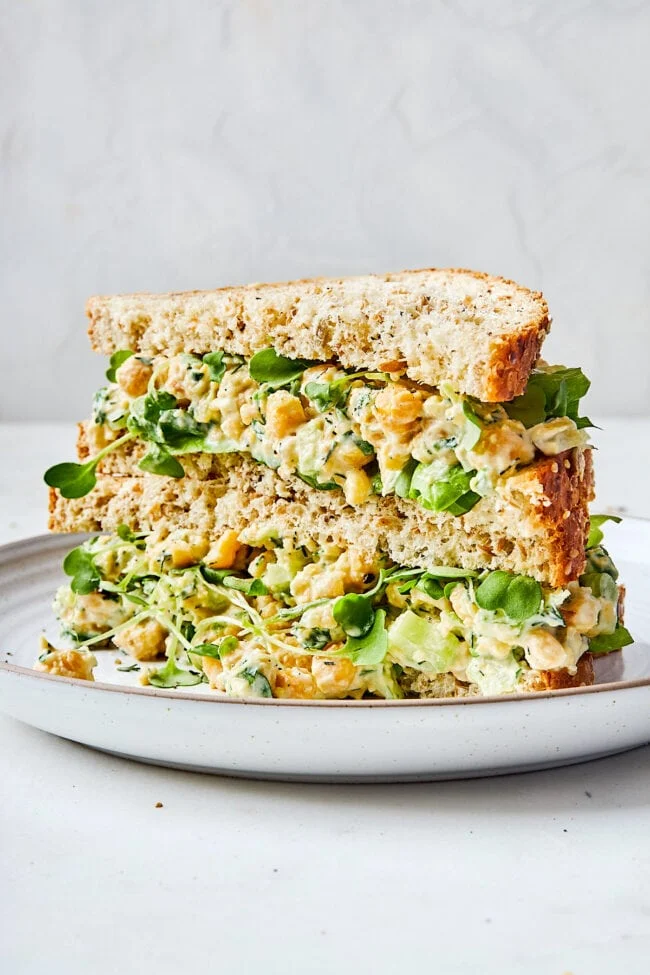

Chickpea Salad

Description
This quick and easy lunch is similar to a classic chicken salad, but it's made
with mashed chickpeas instead. It is perfect for vegetarians and can easily be
made vegan by swapping the mayo for a plant-based alternative.
Packed with protein, fiber, and flavor, this salad is creamy, crunchy, and very
satisfying, even when you are short on time. This is a go-to in my house for meal
prepping as it stores in the refrigerator for up to a week!
Ingredients
- Chickpeas - 2 cans, drained and rinsed
- Celery - 6 stalks, finely chopped
- Green onion - 2 stalks, finely chopped
- Fresh dill - 1/2 cup, minced
- Mayonnaise - 1 cup
- Dijon mustard - 1 tbs
- Capers optional - 1/4 cup, chopped
- Lemon juice - to taste
- Salt and pepper - to taste
Steps
- Place the chickpeas in a large bowl and mash with a fork or potato masher
until most of the chickpeas are smashed.
- Stir in the celery, green onions, and capers.
- In a small bowl, whisk together the remaining ingredients to create dressing.
- Add dressing to the chickpea mixture and stir until well-combined. Add salt
and pepper to taste.